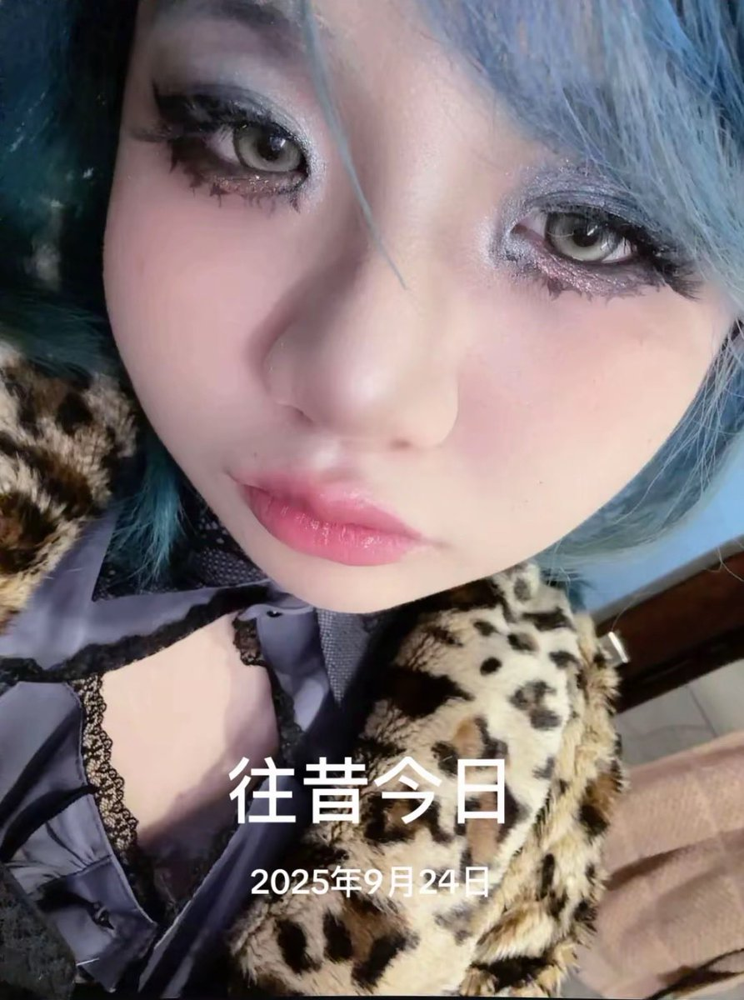
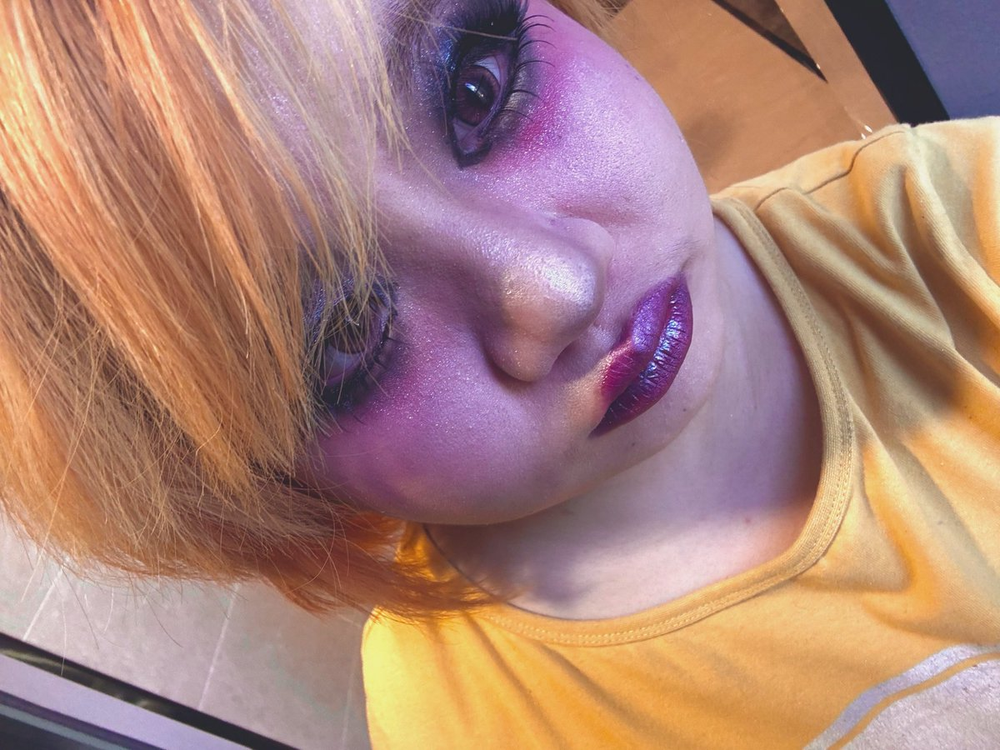
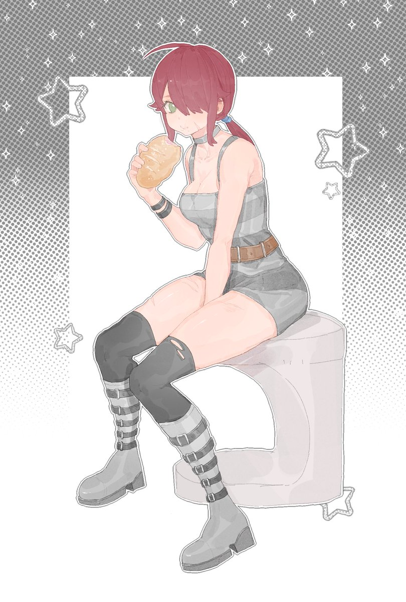
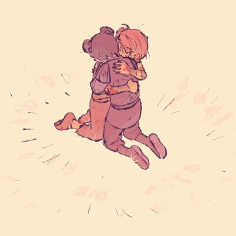

Yumeoibito
@Yumeoibito76
RT @Xxnay0621: 互关寻回 我是盐制肉鸦momiji 被疯狂炸号 心路历程 精神太不稳定 对不起 现在好多了 我还是希望能做一个温和的外星人 随你喜好 日常 药物记录 宠物 游戏 碎碎念 oc 希望大家能快乐心想事成 流动性别 称呼都可以 希望我能找到自己的路 我…




Xxnay制肉鸦
@Xxnay0621
互关寻回 我是盐制肉鸦momiji 被疯狂炸号 心路历程 精神太不稳定 对不起 现在好多了 我还是希望能做一个温和的外星人 随你喜好 日常 药物记录 宠物 游戏 碎碎念 oc 希望大家能快乐心想事成 流动性别 称呼都可以 希望我能找到自己的路 我爱我的朋友 努力找到更好自己
这里没什么好看的Orz https://t.co/GzuJRQo5Ts